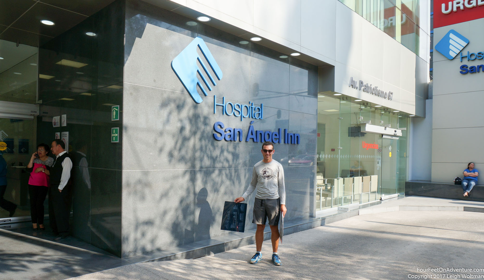
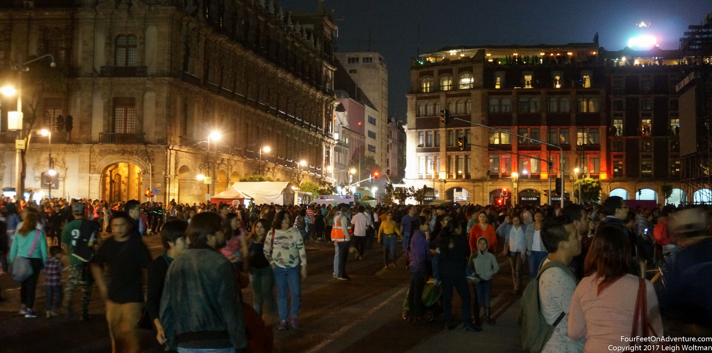
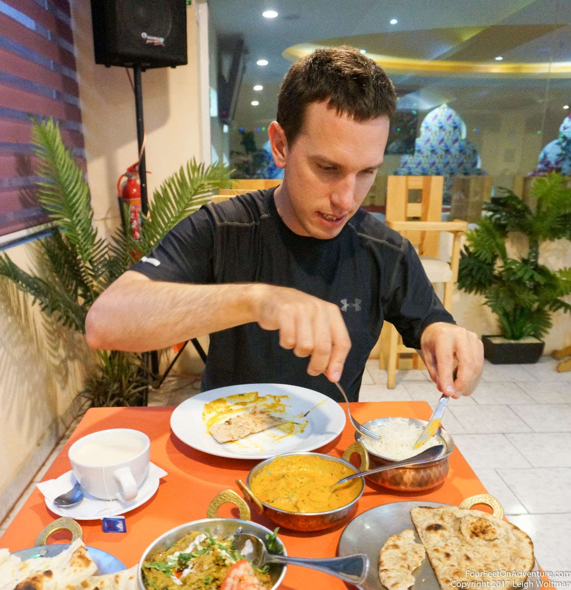
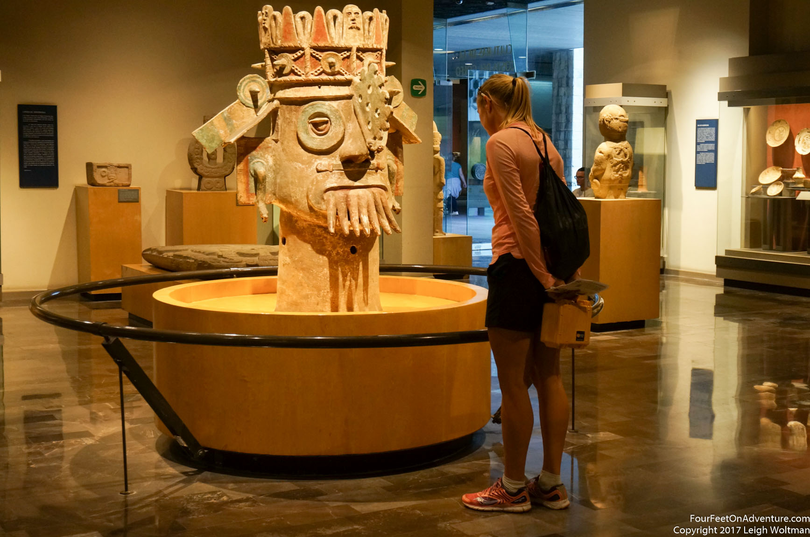

Now both in Mexico City, we set out to try and find a doctor. With some Google I found a doctor who I termed the "Dr. Phil of Mexico", she had a fancy, advice driven website, apparently hosted her own radio show and appeared on TV too. She had a contact form, so I gave it a try. Surprisingly, she personally phoned back within an hour. She spoke good English and was initially going to see me, but when I described where the pain was radiating, she decided I needed to see a urologist, and gave me the number of one. This guy was also heavily into the marketing, but had several websites and an active Twitter account. I left a message on his phone, and again, he called back quite quickly. He took a brief description and then said, he wanted an ultrasound done before he would see me, and that we would see me later today. This was all happening fairly quick for me and I didn't understand how I was supposed to get an ultrasound and get to the doctor by later in the afternoon. He said, I should find a "labratorio" by the name "Chopo" and inquire there. We got on the bike and rode slowly towards the centre of Mexico City. We indeed found one of these medical laboratories where they did x-rays, bloodwork and ultrasounds. No one spoke English there, or at least very little, so I tried hard to order an ultrasound. It would cost just over $20 in Canadian equivalent, and I eventually understood that I had to come back in the early afternoon for my appointment time. As I walked out, they grabbed me, I understood completely wrong, I would have the ultrasound now, and the results would be ready in the early afternoon. Fortunately, I got through the procedure with a very patient technician who guided me through with only hand gestures.

Annette and I went off to find a place to stay, settling on a hostel. On foot, we continued back to get the ultrasound results which were large black and white transparencies. We didn't have much time, and we had to be at the doctor's office across the city. We ran to the subway and jumped in, taking a transfer along the way. Eventually, we arrived at the hospital. We were coached through the sign in process and were soon waiting in the reception area of a very modern hospital. Everything here was new and gleaming. The urological surgeon saw me and gave me a diagnosis, I had a testicle problem and his prognosis was great, get some more supportive underwear and things were great. He told us where to get the support needed and we left, surprised to see a specialist for the Canadian equivalent of $50. We tried to locate the stores he is talking about with no success. We bounce from hotel to hotel over the next few days; the bicycle ride between them is pretty painful for me. Each hotel seems to be getting deeper into bad neighborhoods, our hotels seem to be surrounded by prostitutes and when attempting to view a potential room, Annette walks in on one still dressing for the day.
It has been almost ten years since I was previously in Mexico City but much of the city remains the same. One of the things I forgot about, is how all the stores of the same type congregate in one neighborhood. On my walk to find lunch one day, I came across the printing press area, here, every business along the street did some type of printing advertising good rates for posters, business cards, booklets, etc. The street next to that was partially related. Here, we had all the supplies for paper based art; papers, paints, pens and pencils.
After a couple days, the doctor phones me which was a surprise for me, but he seemed surprised when I wasn't better already. I didn't understand how I could be better as it was sore for almost two weeks already and this had just been a couple of days further.
After a couple more attempts, we find a hostel in central Mexico City which gives us a large, clean double room. It is on the sixth floor of a building but the staff know how to use the service elevator which is large enough for use to wheel our bicycle right inside. We book it for a couple weeks as Annette enrols in Spanish language classes while I hope that some more rest will do the trick.
After these weeks, we decide to see the doctor again. I setup an appointment after Annette's classes and she joins me. We end up getting organized a little late, and when we run outside it is pouring rain. I'm wearing my cheap flip flops and we find out that their soles turn as slippery as a skating rink when they get wet. So I'm trying to rush and trying to stay upright, and we head into the subway. It is crowded and when the train arrives there is a huge push from behind. Once on the train, I realize what this was, it was a distraction and my wallet it gone. We get off the subway to go back to the hotel to check but it was probably in my pocket. With all the rushing and flip flop problems, I potentially didn't even zip up my pockets. We cancel the doctor and reschedule for the next day. It is frustrating, but our stuff was divided up so we didn't lose too much.

This time, we are more successful, but the doctor is delayed in surgery. We see him and he gives me another exam, rules out all things and this time says he doesn't know what is causing my problem. He even suggests that if it was still painful after a couple months he would recommend cutting off my tesicle. We both question the treatment and decide that it might be time to get a second opinion. Definitely feeling stuck, we decide to take a trip back to Canada. There are several reasons for us to go there at the moment, and maybe we will make more progress on my injury. We imagine that this is just a couple week detour, and we decide to store the bicycle at a contact of Annette's.

While she is biking to bring the tandem away by herself, she knocks the mirror right of a taxi with the rear handlebars on the bike. Now she had an angry Mexican driver in the middle of the streets of Mexico City yelling at her in Spanish. He demands a payment of 100 pesos, which evaluating to around 7 dollars for us, is definitely a cheap solution to the problem. Sad about our pause in the journey, but glad that I can have a more familiar access to healthcare, we watch the city disappear under us as e fly back North.

